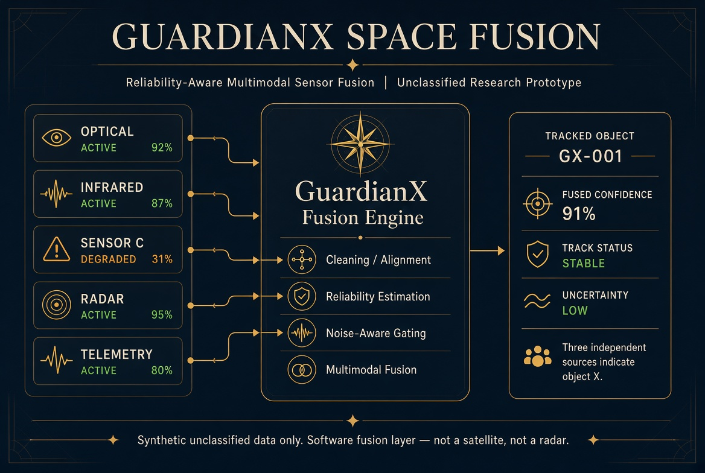

What it is
Reliability-aware fusion
Optical, infrared, radar-like ranging, and telemetry streams are not treated as equal. A noisy or conflicting source is gated so it cannot dominate the fused result.
Research prototype · Unclassified · Synthetic data
A software fusion layer for heterogeneous sensing sources. It estimates reliability, down-weights a degraded source, and returns one estimate with confidence and uncertainty. Not a satellite. Not a radar. Not flown hardware.

What it is
Optical, infrared, radar-like ranging, and telemetry streams are not treated as equal. A noisy or conflicting source is gated so it cannot dominate the fused result.
Maturity
Current public slice is a research prototype on synthetic unclassified data. Government work is limited to demonstration, technical assessment, and software evaluation under a written scope.
Related research
HQ-SFM is the imaging-paper family (noise-aware image fusion). Space Fusion applies the same gating idea to object/event estimates rather than reconstructed scenes.
Three independent sources indicate object X. Confidence = 0.91. Sensor C currently appears degraded. Estimated trajectory = … Uncertainty = …
Do not describe this page as operational missile warning, quantum hardware, or a spacecraft product.